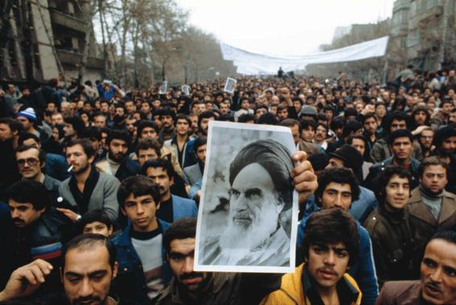
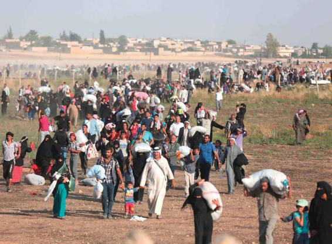

Religious nationalism involves the linking of deep religious convictions with beliefs about a people’s social and political destiny. In countries around the world, religious nationalist movements reject the notion that religion, government, and politics should be separate and instead call for a revival of traditional religious beliefs that are directly embodied in the nation and its leadership (Beyer, 1994). These nationalist movements represent a strong reaction against the impact of technological and economic modernization on local religious beliefs. In particular, religious nationalists oppose what they regard as the destructive aspects of Western influence on local culture and religion, ranging from U.S. television, movies, and social media to the missionary efforts of foreign evangelicals.
Religious nationalist movements accept many aspects of modern life, including modern technology, politics, and economics. They effectively use social media to reach millions of new recruits worldwide. Yet, at the same time, they require a strict interpretation of religious values, rejecting altogether the notion of secularization. Religious nationalist movements do not simply revive ancient religious beliefs. Rather, they partly “invent” the past, drawing on different traditions and reinterpreting events to serve their current beliefs and interests. Violent conflicts between religious groups sometimes result from their differing interpretations of the same historical event (Anderson, 1991; Juergensmeyer, 1993, 2001, 2009; van der Veer, 1994).
Table 17.1APPLYING SOCIOLOGY TO RELIGION IN MODERN SOCIETY
CONCEPT
APPROACH TO UNDERSTANDING RELIGION IN MODERN SOCIETY
CONTEMPORARY APPLICATION
New Religious Movements
A phrase used to characterize new or unusual religious organizations that lack the respectability that comes with being well established for a long period. Preferred by many sociologists of religion over terms such as “cult” or “sect,” which often have negative connotations.
Unification Church, Scientology, Wicca, Eckankar, Druidism, Lukumi (also called Santería), and Rastafarianism
World-Affirming Movements
A subcategory of New Religious Movements that focuses on practices that affirm members’ ability to overcome personal limitations and unlock their human potential, and thereby achieve success in the outside world.
Self-help and therapy groups; “New Age” Movements such as paganism, shamanism, astrology; Scientology
World-Rejecting Movements
A subcategory of New Religious Movements that is highly critical, and therefore rejecting, of the outside world. Tend to be extremely demanding of members, requiring them to subsume their individual identities to that of the group, adhere to strict rules and behaviors, and often withdraw from activity in the outside world.
Branch Davidians, People’s Temple; Krishna Consciousness; the Manson family; Heaven’s Gate
World-Accommodating Movements
A subcategory of New Religious Movements, they are often offshoots of existing religious denominations that emphasize the importance of an inner religious life and spiritual purity believed to have been lost in traditional religious settings. Adherents accommodate to the outside world, carrying on their lives and careers with little visible change, while practicing inner religious devotion.
The linking of strongly held religious convictions with beliefs about a people’s social and political destiny, involving a revival of traditional religious beliefs that are directly embodied in the nation and its leadership. Often oppose what are seen as the destructive aspects of Western influence on local culture and religion.
Islamic Nationalism (Taliban, Islamic State, Boko Haram); Hindu Nationalism (Hindutva, Sangha Parivar); Buddhist Nationalism (Sinhalese Bodu Bala Sena Buddhist Power Force); Christian Nationalism (National Reform Association, Christian Identity Movement)
Religious nationalism is rising because in times of rapid social change, unshakable ideas have strong appeal. The collapse of the Soviet Union, the end of the Cold War, and today’s sweeping global economic and political changes have led many nations to reject the secular solutions offered by the United States and its former socialist enemies and to look instead to their own past and cultures (Juergensmeyer, 1995). In the Middle East, for example, many Palestinian Muslims as well as Israeli Orthodox Jews renounce the notion of a secular democratic state, arguing for a religious nation purged of nonbelievers. In India, Hindus, Muslims, and Sikhs face off against one another.
Islamic Nationalism
Islamic nationalism has triumphed in Iran, Sudan, and, until 2001, Afghanistan; today, it is making a resurgence in that country. It has also made significant inroads in Algeria, Egypt, Malaysia, Pakistan, Palestine, Turkey, and elsewhere. Since the 1970s, Islamic nationalism has shaped the contours of both national and international politics. To understand this phenomenon, we must look both to aspects of Islam as a traditional religion and to secular changes affecting countries where its influence is pervasive.
Islam, like Christianity, has continually stimulated activism. The Qur’an is full of instructions to believers to “struggle in the way of God” against both unbelievers and those within the Muslim community who introduce corruption. Over the centuries, there have been successive generations of Muslim reformers, and Islam has become as internally divided as Christianity.
During the Middle Ages, there was a continuous struggle between Christian Europe and the Muslim states. During the height of Islamic power, the caliphs (Islamic rulers) ruled over an area extending from what later became Spain, Greece, the former Yugoslavia, Bulgaria, and Romania to India, Pakistan, and Bangladesh. Europeans eventually reclaimed most of these lands, and many Muslim areas in North Africa were colonized by European powers in the eighteenth and nineteenth centuries. These reversals were catastrophic for Islam and Muslim civilization, which Islamic believers held to be the highest and most advanced possible. In the late nineteenth century, the inability of the Muslim world to resist the spread of Western culture led to reform movements seeking to restore Islam to its original purity and strength. A key idea was that Islam should respond to the Western challenge by affirming the identity of its beliefs and practices.
This idea developed in various ways in the twentieth century and underlay Iran’s Islamic Revolution of 1978–1979, which was fueled initially by internal opposition to the shah (“the king”), Mohammad Reza Pahlavi (1941–1979). When the shah’s premier, Mohammad Mossadeq, nationalized the oil industry in 1951, a conflict ensued between the pro-West shah and the supporters of the nationalistic Mossadeq. The shah eventually fled the country but returned in 1953, when a U.S.- and British-led coup overthrew Mossadeq. The shah tried to promote forms of modernization modeled on the West—for example, land reform, extending the vote to women, and developing secular education. He also used the army and secret police to brutally suppress those who opposed his regime. The fact that he had been installed by Western powers helped fuel nationalist sentiments that eventually led to the revolution that overthrew him. A dominant figure in the revolution was Ayatollah Ruhollah Khomeini, a religious leader exiled in France during the shah’s reign, who provided a radical reinterpretation of Shiite ideas.
Protestors in Tehran hold up a poster of Ayatollah Ruhollah Khomeini in January 1979. The Islamic Revolution led to the ouster of the shah and the creation of a new Islamic republic under Ayatollah Khomeini.
Khomeini established a government in strict accordance with traditional Islamic law, fusing religion and the state. The government initially made its extremist version of Shiite Islam the basis of all social, political, and economic life in Iran. Men and women were kept rigorously segregated, women had to cover their heads in public, homosexuals could be shot by a firing squad, and women accused of adultery were stoned to death. The strict code reflected a pronounced nationalistic outlook, strongly rejecting Western influences. It should be noted that these practices are not condoned throughout the Muslim world, and, in the view of leading Islamic scholars, are contrary to Islamic beliefs (Oakford, 2014).
The aim of the Islamic republic in Iran was to organize government and society so that Islamic teachings would dominate all spheres. The Guardian Council of religious leaders determines whether laws, policies, and candidates for parliament conform to Islamic beliefs, even though Iran has a U.S.-style constitution providing for elected officials and the separation of powers.
Although recent years have seen some hopeful signs that Iran is liberalizing, such hopes have proved to be short lived in the past. A reform-minded president, Mohammad Khatami, captured control of parliament in the 2000 elections, but Iran’s Guardian Council reversed that victory in elections four years later by disqualifying 2,400 liberal candidates (nearly a third of all candidates). Mahmoud Ahmadinejad, a conservative candidate close to Iran’s religious leaders, won the presidency in that year, and Iran’s relations with Europe and the United States rapidly deteriorated. The pro-democracy Green Movement mobilized millions of people in peaceful protests against the Ahmadinejad government during the 2009 presidential elections but was brutally repressed as a consequence.
The most recent elections (2013) saw a swing in the liberal direction, with the election of Hassan Rouhani as president. Rouhani has sought to improve relations with the West, and one of his chief goals has been to ease the West’s economic sanctions, initially imposed on Iran by the United States in 1979, following the Iranian Revolution. Many other countries joined the United States in imposing sanctions after 2006, when the UN Security Council passed a resolution calling for sanctions in an effort to stop Iran’s nuclear enrichment program, seen as a key step in developing nuclear weapons. An agreement to ease sanctions, in exchange for a verifiable cessation of Iran’s nuclear weapons program, was reached in July 2015. Whether this effort will succeed—and, more broadly, whether Iran will continue its current liberalizing trend—remains to be seen.
The Spread of Islamic Revivalism
Although the ideas underlying the Iranian Revolution were supposed to unite the whole Islamic world against the West, governments of Sunni-majority countries where Shiites are in a minority have not aligned themselves with the Islamic Revolution in Iran. Yet Islamic fundamentalism (often called “Islamism,” the complete adherence to Islamic law along with rejection of most non-Islamic influences) has become popular in most of these states, and various forms of Islamic revivalism elsewhere have been stimulated by it.
Although Islamic fundamentalist movements have grown in many countries in North Africa, the Middle East, and South Asia, they have won power in only two states: Sudan and Afghanistan. Sudan has been ruled since a 1989 military coup by Omar al-Bashir, who heads the National Congress Party. The fundamentalist Taliban regime consolidated its hold on the fragmented state of Afghanistan in 1996 but was ousted at the end of 2001 by Afghan opposition forces and the U.S. military, although the Taliban still commands significant power in many parts of the country and in the neighboring border areas of Pakistan as well. Islamist movements also exist in states such as Malaysia, Bangladesh, and Indonesia, and several provinces in Nigeria have implemented sharia courts, which enforce a strict interpretation of Islamic religious law, operating in parallel with civil courts.
Al Qaeda was an early example of a loosely knit transnational network of militant religious fundamentalists with a global vision. Founded by Osama bin Laden, al Qaeda sought to overthrow what it regarded as corrupt Muslim governments, drive Western influence from the Middle East, and eventually establish a religiously based government that would encompass a billion Muslims throughout Europe, Africa, and Asia. Islamic rule would be subject to strict religious discipline, as it currently is in those parts of Afghanistan ruled by the Taliban.
In 2012, a U.S. Navy Seal unit helicoptered into the Pakistan compound where bin Laden had long been hiding, killing bin Laden and raising hopes that al Qaeda would be seriously weakened by the death of its founder. But by then, events in the Middle East had significantly changed the political landscape. The 2003 U.S. invasion of Iraq succeeded in toppling Saddam Hussein, but it also resulted in escalating violence, suicide bombings, and growing sectarian conflict. Some Iraqis mobilized against the U.S. occupation, which lasted until 2011; others were caught up in conflicts between Iraq’s Shiite majority and Sunni minority. Tens of thousands of Iraqi civilians died during this period. Sunnis, who had ruled Iraq under Saddam, now found themselves under the control of Shiite governments believed to be aligned with Shiite Iran.
One result was an Islamist revival among fundamentalist Sunnis, who saw the chaos in Iraq and neighboring Syria as providing an opportunity to create an Islamic state. Shiite governments ruled both Iraq and Syria; both countries were wracked by sectarian violence and civil war. Islamist Sunnis called for the creation of a caliphate across a broad swath of Iraq and Syria. This was to be an Islamic state governed by strict religious principles and ruled over by a caliph, a religious and political successor to the prophet himself. It would enforce—by violent means if necessary—a return to the strict seventh-century religious beliefs attributed to the prophet Muhammad. Following significant military victories over the Iraqi army, the Islamic State of Iraq and Syria (ISIS) was proclaimed to be a global caliphate in 2014. (ISIS is sometimes simply referred to as IS—Islamic State—and sometimes as ISIL, Islamic State of Iraq and the Levant. “Levant” is a term that has been used for centuries to refer to the area in the eastern Mediterranean.)
Syrians cross the border into Turkey in June 2015, fleeing heavy fighting between ISIS and Kurdish forces.
By 2017, however, ISIS had lost much of its territory in Iraq, including control over its key cities, thanks to military efforts by the Iraqi government, supported by the presence of U.S.-led NATO military ground forces and airstrikes. The situation in Syria has been less clear, since the fight against ISIS involves complex alliances among numerous military groups (some labeled as terrorist by the United States) attempting to overthrow Syrian president Bashar al-Assad. The Syrian conflict has also been caught up in a geopolitical struggle between the United States (which favored Bashad’s ouster) and Russia (which supported Bashad) (Lister, 2017; Baron, 2017). The defeat of ISIS as a territory-holding state does not, however, necessarily mean its defeat as a potent religious and political force. Rather, its adherents may spread out, becoming a global jihadist movement that seeks control elsewhere or, failing that, continues to engage in acts of terrorism elsewhere in the world (Juergensmeyer, 2016).
ISIS was the creation of Abu Bakr al-Baghdadi, who became its founding caliph. Under his rule, unbelievers—Shiites, Christians, foreigners—were either driven from the caliphate or killed. Beheadings, crucifixions, and mass shootings of civilians were filmed and went viral on social media. ISIS has engaged in an expensive, professional, and effective social media campaign to recruit young people worldwide, including young women as potential brides. The group has a strong presence on Facebook and Twitter and has posted graphic execution videos on YouTube to disseminate its message and attract new followers to its extremist cause.
Such Islamic revivalism cannot be understood wholly in religious terms. It largely represents a reaction against what Iranian writer Jalal Al Ahmad (1997; orig. 1962) called “Weststruckedness” or “Westoxification”—the seductive (and, in his view, corrupting) power of Western cultural beliefs and practices. In countries where as much as half the population is under age 15, where poverty is widespread, and where many well-educated young men and women face a life of marginal employment and uncertainty, such beliefs find fertile ground.
The strong Western presence in the Middle East has provided additional fuel for anti-Western sentiments. In his fatwas (opinions that he claimed to be grounded in Islamic law), bin Laden repeatedly condemned U.S. troop presence in Saudi Arabia (which, as the land of Muhammad, is regarded by Islam as its most sacred place), U.S. support for Israel in its conflict with the Palestinians, the first Gulf War against Iraq, and what bin Laden claimed were a million deaths resulting from the postwar economic sanctions against Iraq. Al-Baghdadi called on his followers to “explode the volcanoes of jihad [holy war] everywhere.”
Muslim religious leaders throughout the world have condemned ISIS, whose violent methods are abhorrent to the vast majority of Muslims, who view its teachings as contrary to Islamic beliefs. But it still has appeal to thousands of young Muslim men—and some young Muslim women—in Europe and the United States, as well as parts of Asia and Africa. The result has been heightened security and surveillance in many countries and coordinated military attacks on ISIS strongholds. Only time will tell if current efforts to destroy ISIS will be successful.
CONCEPT CHECKS
What are the three largest religious groups in the world?
What are the reasons so many Americans belong to religious organizations?
To what extent does the treatment of women reflect social conditions, and to what extent does it derive from holy writings such as the Bible and the Qur’an?
What is religious nationalism? Why can’t it be viewed as a reaction to economic modernization of local religious beliefs and Westernization?